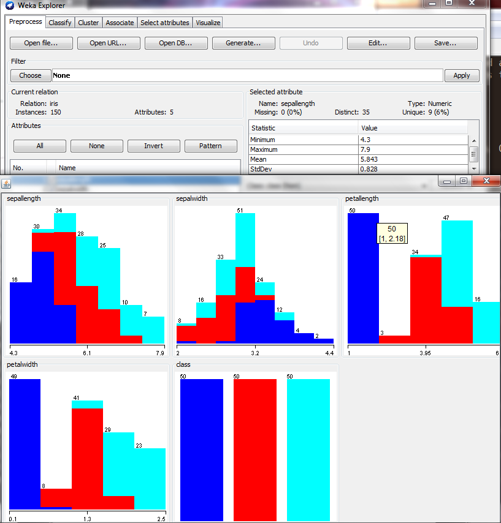
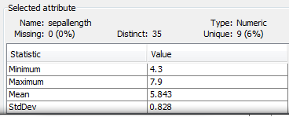
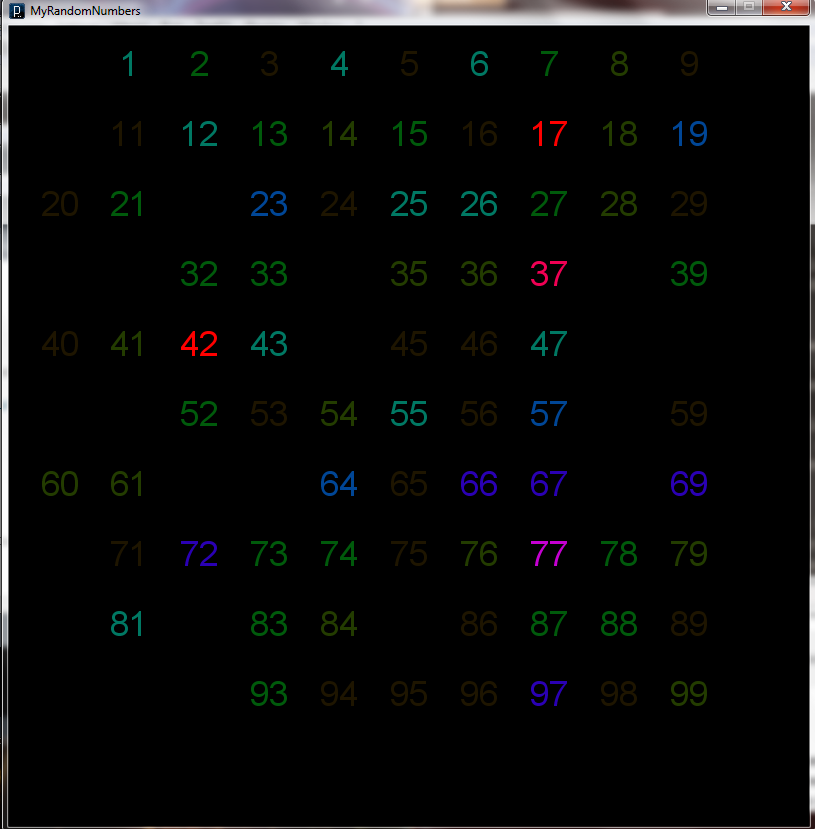

In today's world, the term 'data' is used to describe any kind of information, whether it be digital (files on a computer or in a database) or physical (entries in journals, books, financial records). Without our knowledge, we generate data when we go to the grocery store, when we pay our taxes, and when we go to the doctor's office. 'Data' is now a common term, used by experts and the average person to describe any information that we use to argue, think, and make decisions.
Like most things that enter common parlance, 'data' has gone through a semantic shift in the average mouth. Often, 'data' we are presented with has been sterilized and processed beforehand to extract meaning - it has been changed into information.
The defintion of 'data' is "A collection of facts from which conclusions may be drawn". The collection of facts is the 'data' and the conclusions are the 'conclusions'. The process of drawing the available conclusions out of a collection of data is called 'Data Mining'.
As data scientists, when we recieve data, we recieve a collection of measurements and labels that we cannot extract information out of without some work. This process of extracting meaningful information out of data is called Data Mining.
Each instance (row, in a table) of data usually represents an object - a transaction, person, or any other entity. The instances in a table have attributes, which are properties of that instance of data. For example, a transaction instance might have attributes such as subtotal, tax, and grand total for the transaction.
In the world of Data Mining, we use data from many, many sources. From studies of mushrooms to whether or not someone purchases beer and diapers at a grocery store, the data scientist is exposed to information from many domains, but no matter how different those domains are, there are properties all data share. One of the most fundamental of these properties are the types of the data and the data's attributes
Data comes in many types. Datasets often differ on different characteristics, including dimensionality, sparsity, and resolution. Dimensionality is the number of attributes each instance of the data has. Sparse data tends to have a large number of attributes per instance that have a value of zero, which means that we often can ignore the zero values and have less processing to do. The resolution of the dataset describes how detailed the dataset is. For example, a graph of purchases at each certain store in a large retail chain can give more information about how much each store sells, but a graph at a higher resolution (purchases per state, perhaps), makes this infomation harder to obtain but makes the data easier to process.
Record data is a dataset of a collection of records, each of which consists of a fixed set of data fields (ref 1). This type of data is often stored in relational databases for ease of access.
These types of data contain records in which each record contains a set of items. This type of data is often asymmetric and sparse, meaning that most items will not be included in a transaction and so can be ignored while processing the data.
If all data objects ina collection all have the same fixed set of numeric attributes, the data can be thought of as a vector in multidimensional space. Each dimension represents an attribute, and the dataset can be organized in a matrix struture.
Graphs are often useful for modeling data that have data object that share relationships with other objects or are themselves graphs. Web sites can be represented using a graph, with each node being a page and each edge being a hyperlink.
Some data have relationships among attributes that involve order in time or space. Temporal data is an extention of record data where each record has a time associated with it. Temporal data in which the records are a measurement taken over time is called a time series. When working with time series and other temporal datasets, the data scientist must watch for temporal autocorrelation, the phenomenon in which measurements that are close in time tend to be close in value.
Another type of ordered data is spatial data, data with attributes like position and areas. A map is an example of spatial data, and it is subject to spatial autocorrelation, the phenomenon in which objects that are physically close to be close in value as well.
There are four different types of attributes: Nominal, Ordinal, Interval, and Ratio. Of these four types, two are considered qualitative - Nominal and Ordinal. The remaining two types are quanitative - Interval and Ratio.
An attribute type that is 'qualitative' is used to show that the data object belongs in a certain class.
Nominal attributes are the 'simplest' kind of attributes. Nominal attributes have a value meaning that the data instance is a member of a specific class or has a particular quality. This type of attribute does not encode any information other than the data object's participation in a class, so a data object's nominal attributes may only be tested for equality ( = ), whether or not the data belongs to that class.
Examples of nominal attributes are zip codes, id numbers, eye color, and gender.
Ordinal attributes are like nominal attributes in that they indicate what class a certain quality of a data object belongs to. Unlike nominal attributes, ordinal attributes also have meaning in the form of an ordering. Each label of an ordinal attribute is a value on a spectrum of values, for example, "Good", "OK", and "Bad". This is a spectrum of desirability, with "Good" being the most desirable and "Bad" being the least. "OK" is somewhere in the middle. If these labels had no additional meaning, like "Red", "Yellow", "Blue", they would be nominal rather than ordinal.
Examples of ordinal attributes are: hardness of minerals, grades, and street numbers.
Quantitative attributes are those that contain more information than qualitative attributes, specifically the information that the differences between values are meaningful.
Interval attributes are those that the differences between values are meaningful. This usually means that the attribute has a unit of measurement.
Examples of interval attributes are calendar dates and temperature in Celcius or Fahrenheit.
Ratio attributes are similar to interval attributes in that the differences between values are meaningful. Unlike interval attributes, the ratios between values are also meaningful.
Examples of ratio attributes are: temperature in Kelvin, length, electrical current, counts, age, and mass.
As much as we would love for the data we recieve to be perfect, no data is so. Data is typically generated (or at least, data is chosen for analysis), by humans. All people have cognitive biases, some of which are learned and some of which are just how the human brain works. More and more data generation is being performed by people other than data scientists, and this data may not be as clean or clear as professionally prepared data. The data scientist must process all data to make information, but some data requires a greater effort to extract this data than others.
Data will never be perfect. We are unable to measure anything perfectly and, as such, this measurement error creeps into our datasets whether we like it or not. How we collect data may also lead to loss of data quality, as will outliers and missing values.
Measurement and collection errors are those that take place at the beginning of a dataset's life. A dataset may suffer from such error as a scientist misreading a measurement to someone accidently adding an additional zero to a value. Once the dataset reaches the data scientist, often the scientist's only recourse is to discard the data objects that seem plagued by measurement and collection errors.
Unlike measurement and collection errors, outliers are instances that are well measured and collected but don't seem to go along with the other data. It is a fact that there will be some very tall people in a population, and in a study with a person seven feet tall, that person might be considered an outlier. Outliers can also result from noise.
Noise is the random component of measurement error. It is often caused by spurious objects or fluctuations in measurement tools, and is almost always useless and should be discarded.
Often, a data scientist will be asked to analyze and mine a set of data that he or she knows nothing about. To the scientist, the data is just a collection of values with no particular meaning. One of the best first steps that a data scientist can take is to explore the data using summary statistics and visualization.
A catagorical attribute (nominal or ordinal) can have its frequency and mode measures. The frequency is the number of times a particular value for a catagorical attribute occurs in the entire dataset and is defined as: frequency(value v) = number of objects with attribute value v / number of objects in the dataset.
The mode of a catagorical attribute is the value that has the highest frequency.
Percentiles of a set of values are useful for ordered data and provide an idea of how widely spread the values of the dataset attributes are. Percentiles show at which value 'x' percent of the values for an attribute are less than the xth percentile and the other 100 - x percent of the attributes have a value higher than the xth percentile.
The mean and median can be taken for the continuous attributes of a dataset. The mean is defined as the sum of all values for each data's continuious attribute divided by the number of objects in the set, and is also called the average. The median is the middle value of the dataset if the objects are all sorted in increasing order by the attribute in question.
The maximum of a dataset for a particular attribute is simply the data object with the highest value for that attribute. The minimum is, likewise, the data object with the smallest value for that attribute. The standard deviation of the data is related to the variance - or how different from the mean the data objects tend to be. The variance of a dataset is defined as (1 / the number of objects in the set - 1) times the sum of the squares of the differences between each data object and the mean. The standard deviation is equal to the square root of the variance.
The following screenshot shows some summary statistics generated using WEKA, a data mining tool. These statistics are for the classical IRIS dataset, which can be found online at http://archive.ics.uci.edu/ml/datasets/Iris
In this image, the graphs are histograms of values for each attribute in the IRIS dataset. We can also see on the next image below, taken from the large image, that the minumum value for sepal length is 4.3 units, the maximum is 7.9 units, the mean is 5.843 units, and the standard deviation is 0.828.
With current computer graphics technology, it is possible to visualize data in ways that we could not twenty years ago. A data scientist may wish to use visualization techniques to look at a dataset from a fresh, unique perspective. For some datasets, the visualization makes obvious qualities in the data that were hidden before.
The following image shows the distribution of integers between 1 and 100 chosen by 225 different people asked to choose at random. The color of each integer is dependent on how many times that number was chosen - brighter colors meaning more choices. An interesting pattern in this visualization that was not obvious when the integers were presented as a list are that people seem to choose numbers with sevens in them (particularly in the ones position), perhaps out of a belief that these numbers are more 'random' than others.
